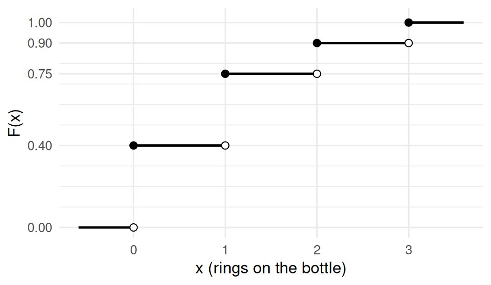
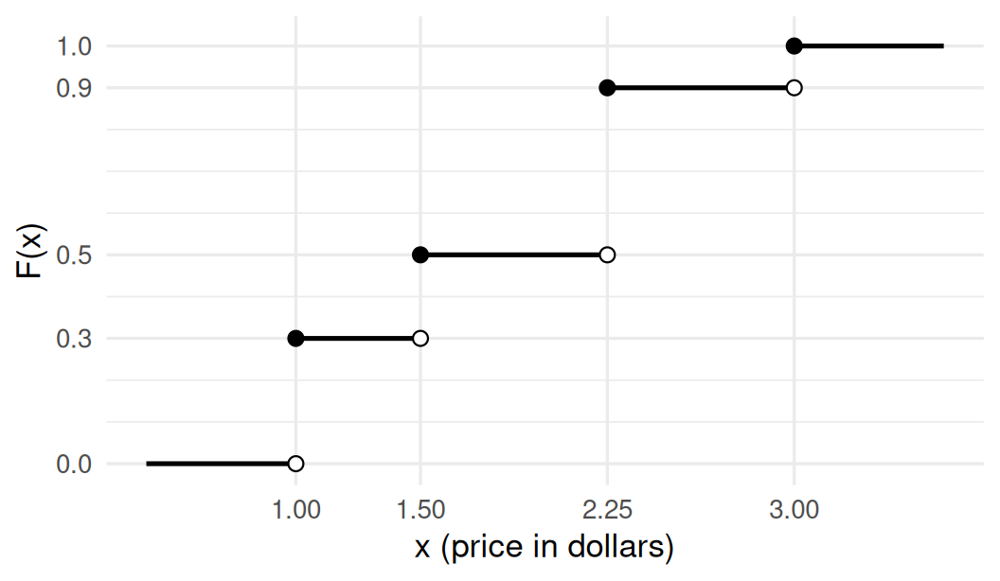
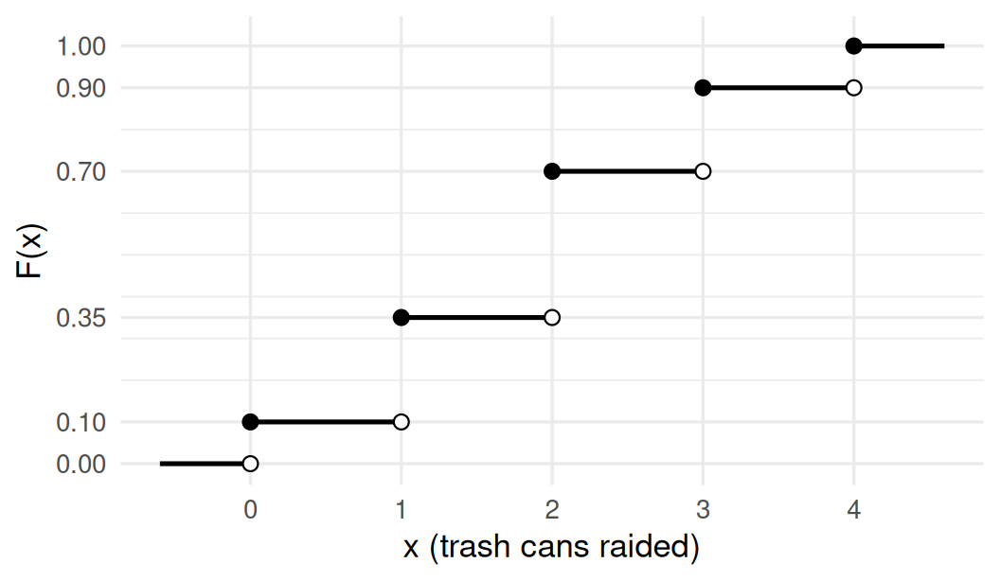
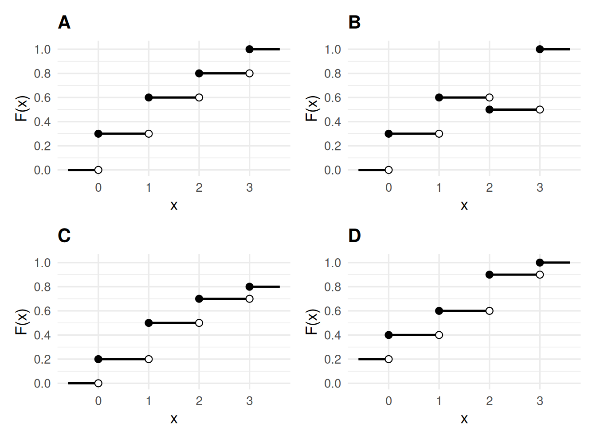
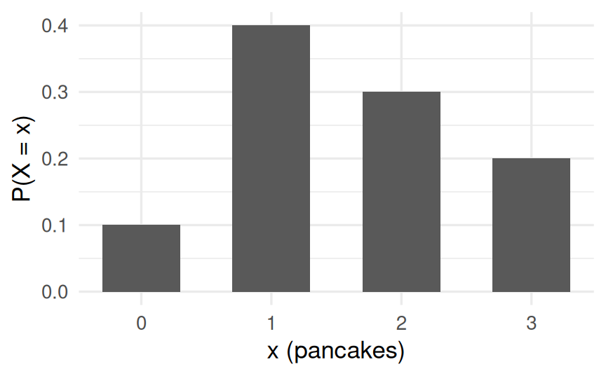
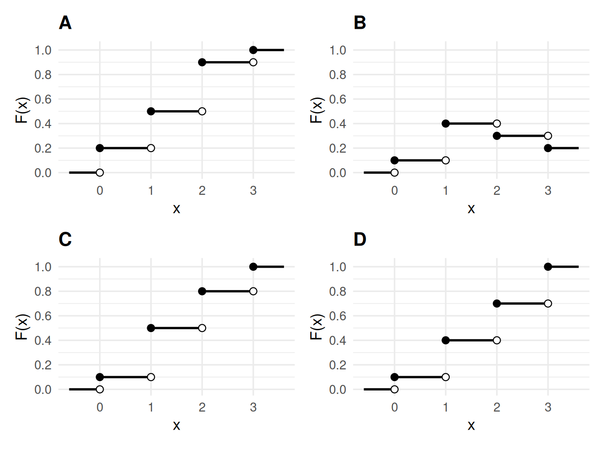
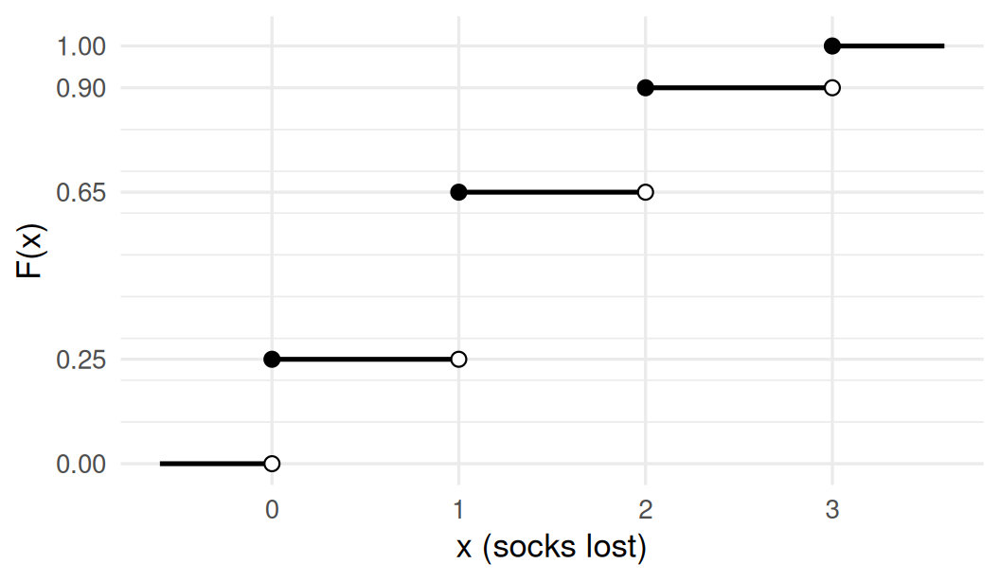
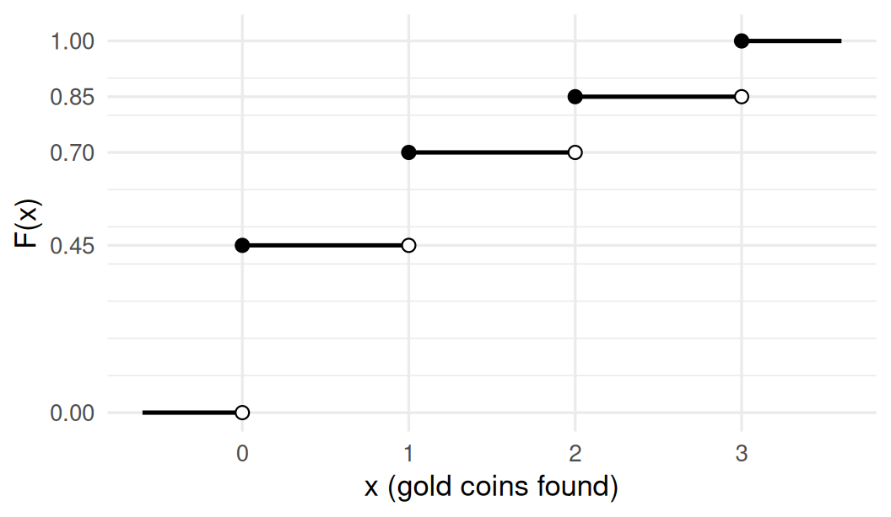
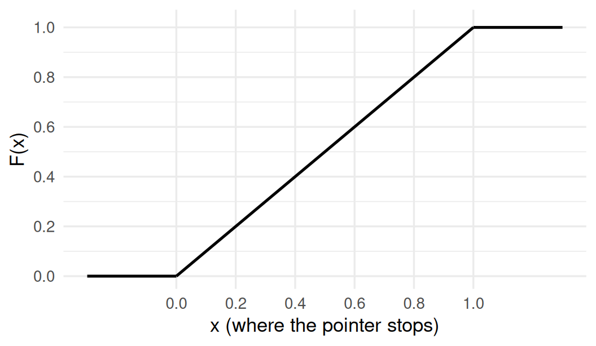

Reading CDFs - Extra Practice
A quick reminder: the cdf is \(F(x) = P(X \le x)\). It starts at 0, climbs to 1, and never goes down. For a discrete random variable it’s a staircase: each jump happens at a value \(X\) can take, and the size of the jump is the probability of that value.
Question 1
At the carnival ring toss, you throw 3 rings at a bottle. \(X\) is the number of rings that land on it. The graph shows the cdf of \(X\).
1. What is \(P(X = 1)\)?
Show answer
\(P(X = 1) = F(1) - F(0) = 0.75 - 0.40 = 0.35\): the size of the jump at 1.
2. What is \(P(X \le 1)\)?
Show answer
\(P(X \le 1) = F(1) = 0.75\): just read the height of the graph at \(x = 1\).
3. What is \(P(X > 1)\)?
Show answer
\(P(X > 1) = 1 - F(1) = 1 - 0.75 = 0.25\).
4. Which value of \(X\) is most likely?
Show answer
0 (sadly). The most likely value is wherever the graph makes its biggest jump. The jump at 0 is \(0.40\), which beats the jumps at 1 (\(0.35\)), 2 (\(0.15\)) and 3 (\(0.10\)).
Question 2
A vending machine sells snacks at a few different prices. \(X\) is the price of a randomly chosen snack, in dollars. The graph shows the cdf of \(X\).

1. What values can \(X\) take?
Show answer
$1.00, $1.50, $2.25 and $3.00. These are the places where the cdf jumps. Nobody said the values had to be whole numbers!
2. What is \(P(X = 2.25)\)?
Show answer
\(P(X = 2.25) = 0.90 - 0.50 = 0.40\): the jump at 2.25.
3. What is \(P(X \le 2)\)?
Show answer
\(P(X \le 2) = F(2) = 0.50\). There’s no jump between 1.50 and 2.25, so the cdf at 2 is still at the height it reached at 1.50. (No snack costs exactly $2, but \(F(2)\) still makes sense: it’s the chance a snack costs $2 or less.)
Question 3
Every night, a raccoon named Bandit raids some of the trash cans on his block. \(X\) is the number of cans he raids on a randomly chosen night. The graph shows the cdf of \(X\).

1. What is \(F(2.5)\)?
Show answer
\(F(2.5) = 0.70\). Bandit can’t raid half a can, but the cdf is defined for every number: \(F(2.5) = P(X \le 2.5) = P(X \le 2) = 0.70\).
2. What are \(P(X < 2)\) and \(P(X \le 2)\)? Why are they different?
Show answer
\(P(X < 2) = P(X \le 1) = F(1) = 0.35\), but \(P(X \le 2) = F(2) = 0.70\). The difference, \(0.35\), is \(P(X = 2)\): “less than 2” leaves out exactly 2, and “at most 2” includes it. For a discrete random variable, \(<\) and \(\le\) really matter.
3. What is \(P(2 \le X \le 3)\)?
Show answer
\(P(2 \le X \le 3) = F(3) - F(1) = 0.90 - 0.35 = 0.55\). Subtract \(F(1)\), not \(F(2)\), so that 2 stays in.
Question 4
A wizard in training casts a frog-summoning spell. \(X\) is the number of frogs that appear. Its pmf is below, but one probability has been eaten by a frog.
| \(x\) | 0 | 1 | 2 | 5 |
|---|---|---|---|---|
| \(P(X = x)\) | 0.5 | 0.2 | ?? | 0.1 |
1. What’s the missing probability?
Show answer
\(P(X = 2) = 1 - (0.5 + 0.2 + 0.1) = 0.2\), since the probabilities have to add up to 1.
2. Find \(F(-1)\), \(F(2)\), \(F(4)\) and \(F(5)\).
Show answer
- \(F(-1) = 0\): there’s no probability at or below \(-1\).
- \(F(2) = 0.5 + 0.2 + 0.2 = 0.9\).
- \(F(4) = 0.9\): there’s nothing between 2 and 5, so the cdf stays flat.
- \(F(5) = 1\): by 5, all of the probability has been collected.
Question 5
Which of these graphs could be a cdf?

1. For each of A, B, C and D: could it be a cdf? If not, what’s wrong?
Show answer
- A: yes. It starts at 0, never goes down, and ends at 1.
- B: no. It goes down at 2. A cdf collects probability as \(x\) increases, so it can never decrease.
- C: no. It tops out at 0.8. By the time you’re past every possible value, you’ve collected all the probability, so a cdf has to reach 1.
- D: no. It sits at 0.2 even far to the left of every possible value. Before the first value there’s no probability yet, so a cdf has to start at 0.
Question 6
The graph below shows the pmf of \(X\), the number of pancakes a randomly chosen customer orders at a diner that serves up to 3.

Which graph shows the cdf of \(X\)?

1. Which one is it?
Show answer
C. Its heights are the running totals of the pmf: \(0.1\), then \(0.1 + 0.4 = 0.5\), then \(0.5 + 0.3 = 0.8\), then \(1\).
- A is the cdf of the pmf read backwards (starting from 3).
- B just copies the pmf’s heights, so it goes down, which no cdf can do.
- D adds up the wrong amounts after the first step.
Question 7
You lose socks in the laundry. (Everyone does.) \(X\) is the number of socks lost in a randomly chosen load. The graph shows the cdf of \(X\).

1. Fill in the pmf of \(X\): \(P(X = 0)\), \(P(X = 1)\), \(P(X = 2)\) and \(P(X = 3)\).
Show answer
Each probability is the size of a jump:
| \(x\) | 0 | 1 | 2 | 3 |
|---|---|---|---|---|
| \(P(X = x)\) | 0.25 | 0.40 | 0.25 | 0.10 |
They add up to 1, as they should.
Question 8
Grubnik the goblin searches a random pothole for gold coins every morning. \(X\) is the number of coins he finds. The graph shows the cdf of \(X\).

1. What’s the probability that Grubnik finds at least 2 coins?
Show answer
\(P(X \ge 2) = 1 - P(X \le 1) = 1 - F(1) = 1 - 0.70 = 0.30\).
2. Grubnik brags that he usually finds at least 2 coins. Is he right?
Show answer
No. He finds at least 2 coins only 30% of the time. He finds no coins 45% of the time, which is his single most likely outcome. Goblins exaggerate.
Question 9
This one uses the continuous uniform distribution from week 7.
The Wheel of Mild Disappointment has a pointer that stops at a completely random spot, measured as a number from 0 to 1. \(X\) is where it stops, so \(X \sim Uniform(0, 1)\). The graph shows its cdf.

1. What is \(F(0.3)\)?
Show answer
\(F(0.3) = 0.3\). For \(Uniform(0, 1)\), \(F(x) = x\) for every \(x\) between 0 and 1.
2. What is \(P(X > 0.75)\)?
Show answer
\(P(X > 0.75) = 1 - F(0.75) = 1 - 0.75 = 0.25\).
3. What is \(P(0.2 < X < 0.6)\)?
Show answer
\(P(0.2 < X < 0.6) = F(0.6) - F(0.2) = 0.6 - 0.2 = 0.4\). For a continuous random variable, \(<\) and \(\le\) give the same answer, because any single point has probability 0.